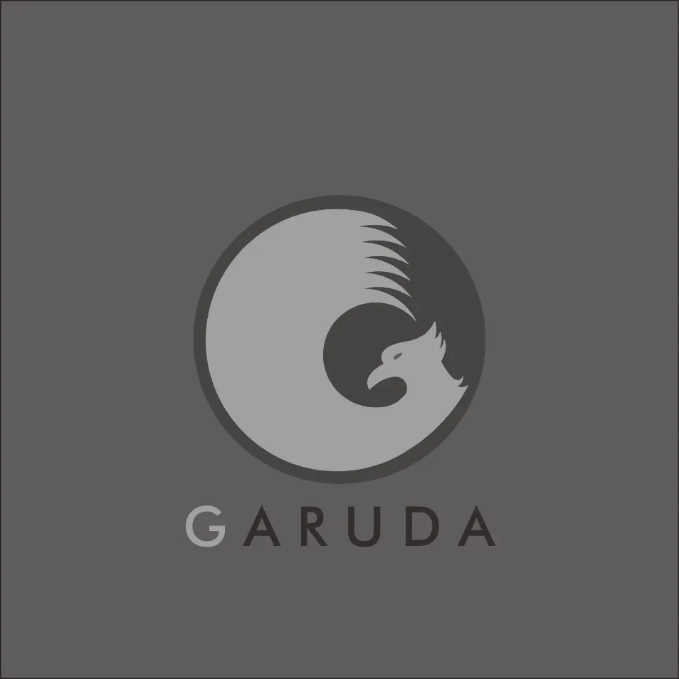
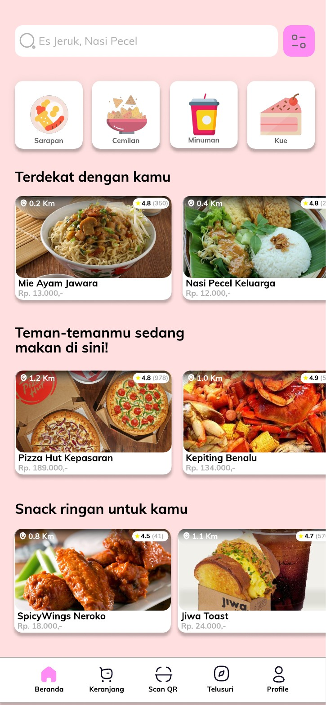
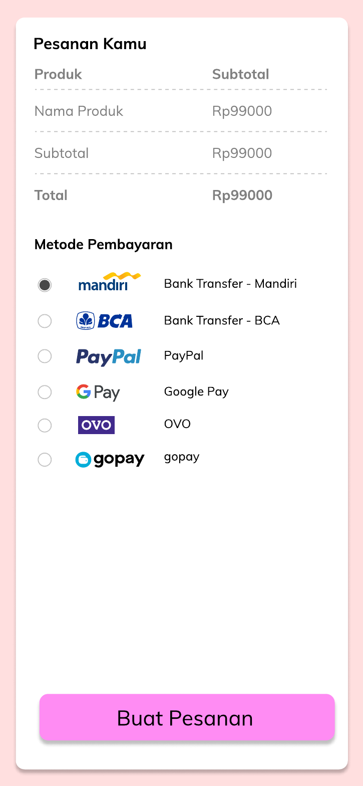

Desain Logo GARUDA

Logo berbentuk lingkaran dengan siluet burung garuda dan palet abu-abu monokrom.
- Jenis: desain logo
- Alat: CorelDRAW
- Tahun:
- Palet: abu-abu monokrom
Febriyan Nugroho
Kumpulan proyek desain yang saya kerjakan: logo dan rancangan antarmuka aplikasi.

Logo berbentuk lingkaran dengan siluet burung garuda dan palet abu-abu monokrom.

Rancangan tiga layar aplikasi pemesanan Vinz Ice Cream: sambutan, beranda, dan kontak (bagian 1 dari 2).
Baca detail proyek UI/UX Vinz Ice Cream: Sambutan, Beranda, dan Kontak

Rancangan layar pesanan dengan ringkasan belanja dan pilihan metode pembayaran (bagian 2 dari 2).
Baca detail proyek UI/UX Vinz Ice Cream: Pesanan dan Pembayaran